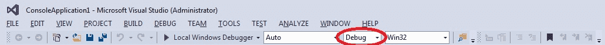
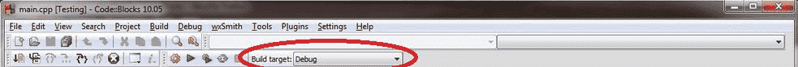

0.9 — 配置编译器：构建配置
一个 构建配置 （也称为 构建目标（构建配置）是一组项目设置，决定了你的IDE将如何构建你的项目。构建配置通常包含诸如可执行文件的名称、IDE用于查找其他代码和库文件的目录、是否保留或移除调试信息、编译器优化程序的程度等内容……一般来说，除非你有特定的理由要修改某些设置，否则应保留这些设置的默认值。
当你在IDE中创建新项目时，大多数IDE会为你设置两种不同的构建配置：发布配置和调试配置。
浮点类型的 调试配置 旨在帮助你调试程序，通常是你编写程序时使用的配置。此配置关闭所有优化，并包含调试信息，这使得程序更大更慢，但更容易调试。调试配置通常默认被选为活动配置。我们将在后面的课程中详细讨论调试技巧。
浮点类型的 发布配置 旨在用于将程序发布给公众。此版本通常针对大小和性能进行了优化，并且不包含额外的调试信息。由于发布配置包含所有优化，此模式也适用于测试代码的性能（我们将在教程系列的后面展示如何操作）。
当 Hello World 程序（来自课程 0.7 -- 编译你的第一个程序）使用 Visual Studio 构建时，调试配置生成的可执行文件为65KB，而发布版本生成的可执行文件为12KB。差异主要在于调试构建中保留的额外调试信息。
虽然你可以创建自己的自定义构建配置，但除非你想比较使用不同编译器设置构建的两个版本，否则很少会有理由这样做。
最佳实践
使用 调试 构建配置进行开发。当你准备好将可执行文件发布给他人，或想要测试性能时，使用 发布 构建配置。
有些IDE（例如Visual Studio）还会为不同平台创建单独的构建配置。例如，Visual Studio会为x86（32位）和x64（64位）平台创建构建配置。
切换构建配置
适用于 Visual Studio 用户
在 Visual Studio 中切换 调试 和 发布 有多种方法。最简单的方法是直接从 解决方案配置 下拉菜单中进行选择，该菜单位于 标准工具栏选项：

将其设置为 Debug 暂时。
你也可以通过选择 生成菜单 > 配置管理器来打开配置管理器对话框，然后更改 活动解决方案配置。
在 解决方案配置 下拉菜单的右侧，Visual Studio 还有一个 解决方案平台 允许您在 x86（32位）和 x64（64位）平台之间切换的下拉菜单。
对于 Code::Blocks 用户
在 Code::Blocks 中，您应该会看到一个名为 构建目标 在 编译器工具栏：

将其设置为 Debug 暂时。
对于 gcc 和 Clang 用户
添加 -ggdb 到命令行用于调试版本，并且 -O2 -DNDEBUG 用于发布版本。暂时使用调试版本选项。
对于 GCC 和 Clang， -O# 选项用于控制优化设置。最常见的选项如下：
-O0是调试版本推荐的优化级别，因为它禁用了优化。这是默认设置。-O2是发布版本推荐的优化级别，因为它应用了对所有程序都有益的优化。-O3添加了额外的优化，这些优化可能比本文档中的其他优化更好，也可能不如-O2具体取决于程序。-O3而不是-O2并测量以查看哪个更快。
参见 https://gcc.gnu.org/onlinedocs/gcc/Optimize-Options.html 以获取优化选项的信息。
对于 VS Code 用户
当你首次运行程序时，一个名为 tasks.json 被创建在 .vscode 文件夹中，位于资源管理器窗格。打开 tasks.json 文件，找到 “args”，然后找到行 “${file}” 在该部分中。
在 “${file}” 行上方，添加一行包含以下命令（每行一个）以用于调试："-ggdb",
在 “${file}” 行，为发布版本添加包含以下命令的新行（每行一条）："-O2","-DNDEBUG",
修改生成配置
在接下来的几节课中，我们将向你展示如何调整生成配置中的一些设置。每当更改项目设置时，我们建议在所有生成配置中进行更改。
这将有助于防止更改到错误的生成配置，并确保如果你稍后切换生成配置，更改仍然生效。
提示
每当你更新项目设置时，请对所有生成配置进行更改（除非出于某种原因不合适）。